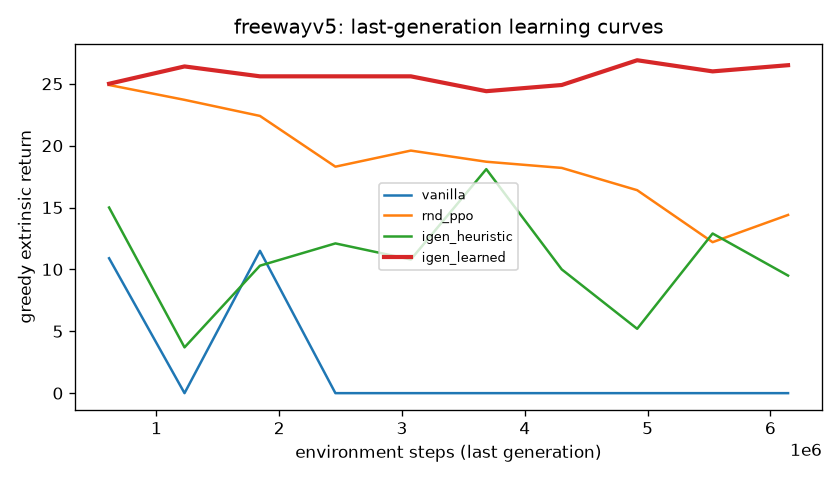
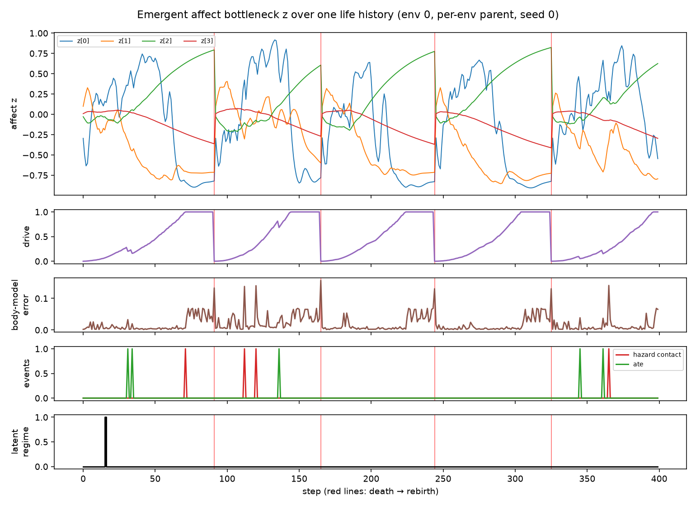
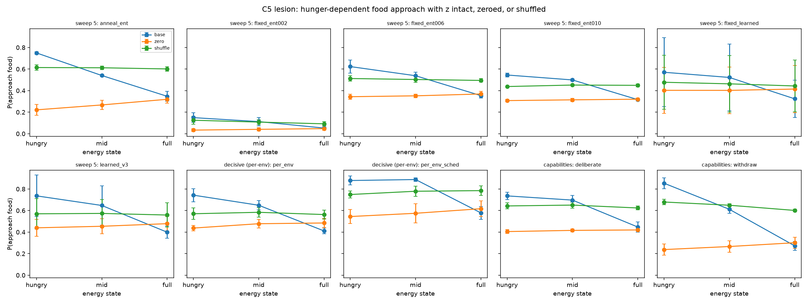

The original design: the parent sets each child’s training, each generation starts from the previous child’s weights, and the parent learns from how well its children do. Why
Each of the three things I think robots are missing has a counterpart in IGEN. The child knows food, hazards and its own moves only by what they do to its body, so a recolored or relabeled world can be mapped back onto itself instead of learned again. A body model predicts what each action will do to that body before the child moves, the way a gut feeling does. And the child’s internal state has no definition of its own: it is shaped only by having a body to protect and a parent to answer to, which is where emotions would have to come from. Worlds whose rules change test whether the child can leave a way of acting that no longer works. The parent is there because people learn all of this by being raised: a parent adjusts how a child explores, and over time the child learns to regulate itself.
First, a parent that sets the curriculum
A parent agent reads a child reinforcement-learning agent’s learning-progress signals (curiosity, frustration, and confidence, later eight in all) and sets its curriculum: reward shaping, how hard to explore, learning rate, planning horizon, and how much to seek novelty. When a generation ends, the child’s weights and the parent’s strategy carry into the next. I first trained the parent with the exact bilevel (Stackelberg) meta-gradient, verified against finite differences to about four digits, and later with REINFORCE on the child’s realized performance.
Exploration-forward curricula clearly beat plain PPO. On MinAtar, the learned parent raised Breakout from 12.3 to 22.8 and Space Invaders from 97.8 to 137.2. On full Atari Freeway (2 seeds), it held a return of 26.5 while plain PPO peaked and then collapsed to 0. But across games, the learned parent was within noise of a random one, and the hand-written heuristic won on Asterix.

Atari Freeway, last generation: the learned parent (red) holds its return while plain PPO (blue) collapses. A child raised by the learned parent, playing MinAtar Breakout. Now, a child with a body
In the first version, the child’s “emotions” were eight statistics I computed from its training, such as return signal-to-noise and value loss. The current version replaces them with a state the child has to form itself, and gives it a body to form it around. The child lives in a 10×10 grid of food, hazards and walls. It has energy it must keep up, skin that senses contact on each side, warmth that rises near hazards, and damage on each of its four sides. It is rewarded only for keeping its hunger down.
There is no pain term in the reward. When a side is injured, moves in that direction fail, the senses on that side get noisier, and energy drains faster. I proved that the best achievable value can only fall as capacity is lost, so avoiding injury is worth learning without being told to. Enough damage on one side, or running out of energy, kills the child. It then sits out 20 steps and is reborn into a fresh layout, which costs the dynasty data and the parent reward.
The world also changes in ways the child cannot see. With no change in appearance, food sometimes restores only 40% as much energy and hazards sometimes hurt 1.75 times as much, and these hidden regimes switch at random, about every 500 steps. Moving burns twice the energy of resting, and food next to a hazard is worth double, so whether to rest, forage or take a risk depends on how hungry the child is and on what it believes about the world at that moment.
One trained child over 240 steps, including a death and rebirth: the world on the left; its learned affect z , never hand-designed, and its body on the right. The child is four small modules, about 263k parameters under a one-million cap: perception, a body model that predicts what each of its five actions would do to its body, a slow internal state z , and an actor-critic. Hunger and injury reach the actor only through z , and no loss defines z . It is shaped only by acting and by what the parent needs to hear, because it is the only message the child sends to the parent.

z over one life history, next to the child’s drive, body-model error, meals and hazard contacts; red lines mark death and rebirth.The child also never sees what an object is. It knows each kind of object only by what touching it did to its body (energy gained, damage taken, pressure on the skin, whether it blocked the way), and each action only by where it actually went. These two tables have no learned weights and keep updating as the child lives, so its belief about the hidden world can be read out directly, and a relabeled world can be mapped back onto its own body instead of learned again.
The parent reads z and sets how the child trains: how much it explores, how fast it learns, and how far ahead it values. Each generation starts from the best child so far. In the latest version, each of the 256 children in a batch gets its own curriculum from its own z , because averaging z over the whole batch had washed out the state the parent needed to read.
Before any learning run, the world is checked bit for bit against a plain-Python reference (0 mismatches in 64,000 transitions), the gradient into z is checked against finite differences, and the emergence criteria were fixed before the first sweep.
What the first seven sweeps showed
The child approaches food 0.75-0.85 of the time when hungry and 0.44-0.50 when full, and that runs through z : shuffling z between children removes 87-100% of the difference, and clamping it passes the intervention test in up to 4 of 5 seeds.
The value the child assigns to food tracks the hidden nutrition regime at a correlation of −0.70 to −0.76 across the main runs, so its belief about the invisible world is accurate. Fragility is tracked only weakly, since hazards are touched about 15 times less often than food.
With the controls relabeled, survival recovers from 0.88 to 0.99 of baseline by the second visit, against 0.42 → 0.41 without body grounding. Recolored objects do not transfer yet: when food looks harmful, the child avoids it and never gets the contact that would correct the belief.
I am still developing the parent. Its current levers (how much to explore, how fast to learn, how far ahead to value) have a best setting that depends mostly on training time, so a carefully searched schedule still keeps up with a parent that reads the child. Giving each child its own curriculum already produced the best z so far: the most causal, the most informative beyond the body, and the most accurate about the hidden world.
When food appears only next to hazards, the child keeps about 80% of its normal survival, but when the rules flip entirely (food injures, hazards feed), it has not yet learned to switch strategy. That jump out of the system is what I am working toward, along with the strictest criterion I set before the first sweep: showing that what z carries beyond the current body comes from having something to lose.

The z lesion test across arms: with z intact (blue), the child seeks food more when hungry; zeroing or shuffling z (orange, green) flattens that dependence. What comes next
IGEN is still in development, and these results come from its first world. The parent, the child and the dynasty stay; I am changing what the parent controls and what the world asks of the child. Next is an uncertainty channel, so the child can doubt a belief and test it again, which the flipped-rule world requires; a re-run of deliberation, where the child chooses from z how far to think ahead and pays for it in energy; and levers whose right setting depends on the child rather than on the clock. Then the same body interface moves into 2D physics and then MuJoCo manipulation, where fingertip touch sensors become the skin and actuator strength becomes the capacity that injury takes away.
 Benchmarking 2026 VLA and world modelsGR00T N1.7, MolmoAct2, VLA-JEPA, and FastWAM on a new embodiment, which became ROBOTIS’s AI MANIPULATOR #13.Read more
Benchmarking 2026 VLA and world modelsGR00T N1.7, MolmoAct2, VLA-JEPA, and FastWAM on a new embodiment, which became ROBOTIS’s AI MANIPULATOR #13.Read more